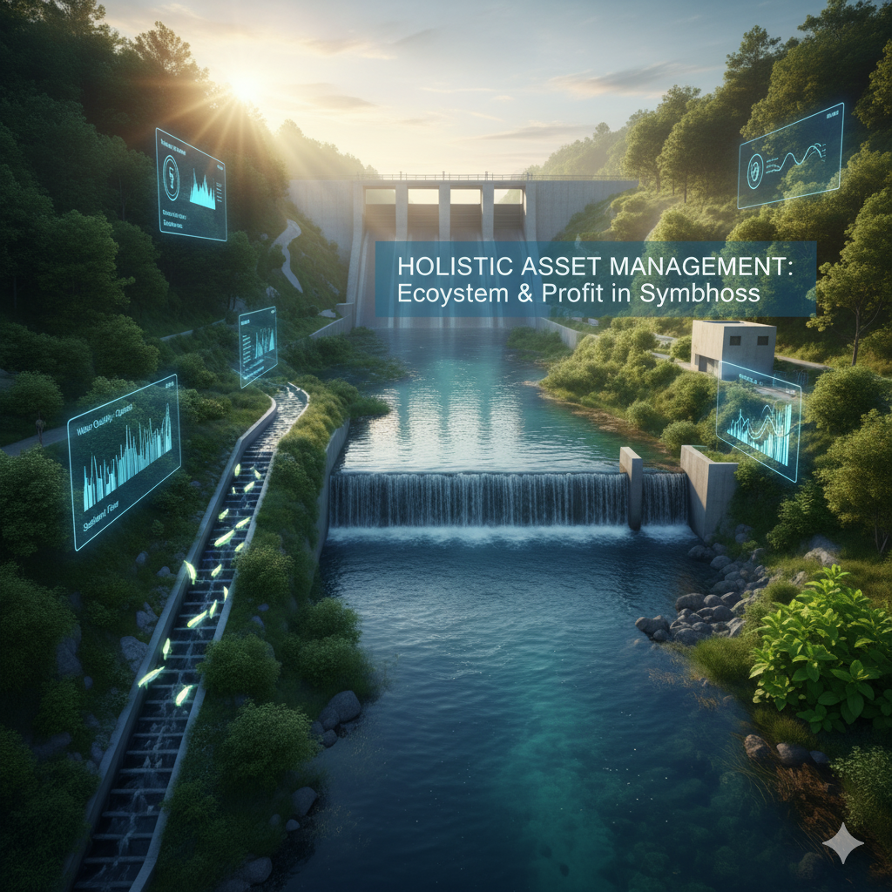

In my engineering experience, the well-being of the river directly reflects the efficiency and sustainability of the plant. When the focus is exclusively on short-term profit and not on the long-term health of the river, Nature sends us clear, unmistakable operational signals.
The Price of Negligence: Clear Signals
Ignoring the ecological dimension is ignoring financial risk. These are the red flags I frequently encounter:
- The "Hungry" River: A dam stops the transport of necessary sediments. This also indicates upstream siltation.
- Visible Traces (Oil Leaks): Oil leaks from machine parts leave noticeable oily traces on the water surface.
- Ineffective Fish Passages: Many fish ladders are too steep, reflecting a lack of hydraulic precision in design.
Conclusion: These problems are not merely ecological issues; they are a sign of an inefficient and outdated operational approach that invites regulatory penalties and public criticism.
Practical Solutions: Paths to Symbiosis
The good news is that solutions exist. The key lies in adopting a holistic approach that regards the river as a single, interconnected system.
Harmonize Your Asset
It is time for a change. Let's find solutions that ensure both profit and preservation.
SHARE YOUR EXPERIENCE